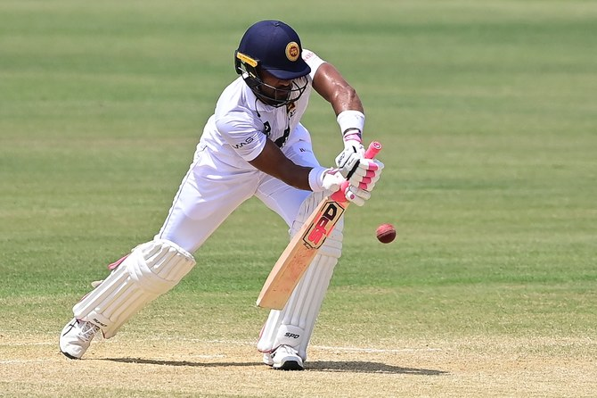
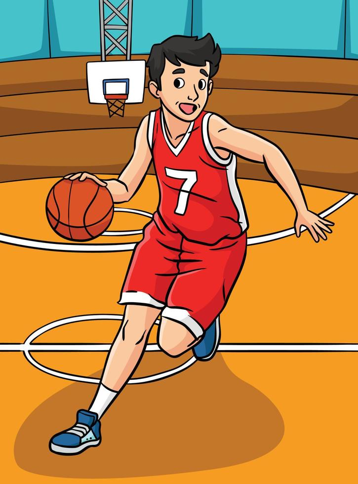
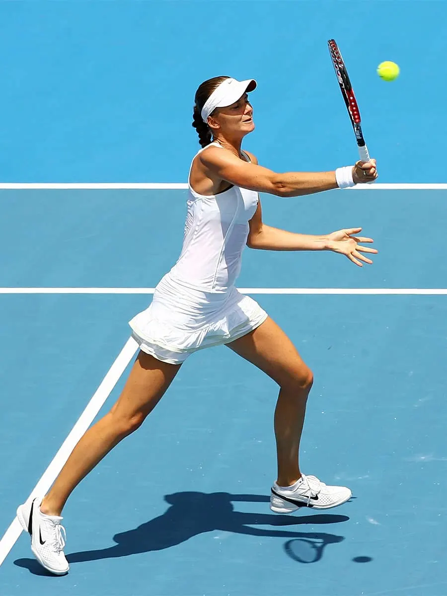
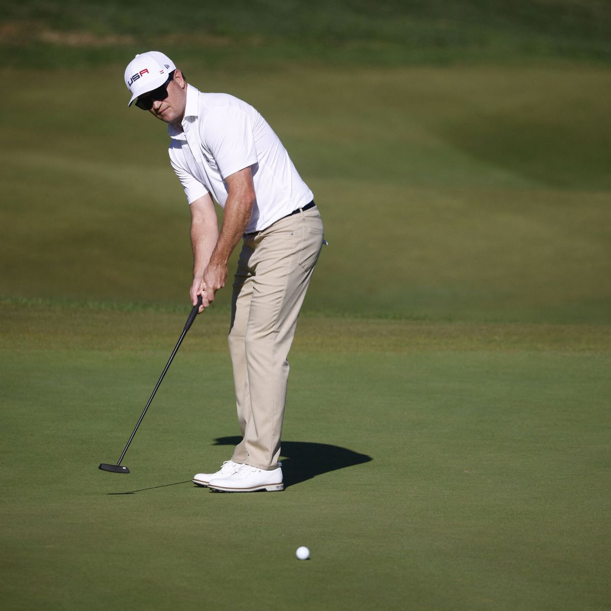

| 1 |
Fulbol |
 |
Conocido como "el deporte rey", el fútbol es más que un juego; es una pasión
compartida por millones de personas en todo el mundo. Desde los campos de barrio
hasta los estadios internacionales, el fútbol une a las naciones y despierta emociones
intensas. La Copa del Mundo de la FIFA es uno de los eventos más esperados en todo el
mundo y atrae a una audiencia global masiva. |
| 2 |
Cricket |
 |
Principalmente popular en países como India, Pakistán, Australia y el Reino Unido,
el cricket es un deporte que combina estrategia y destreza. Los partidos de cricket
pueden durar varios días, lo que añade un nivel de emoción y suspense único para los seguidores |
| 3 |
Baloncesto |
 |
Creado en Estados Unidos, el baloncesto ha ganado seguidores en
todo el mundo gracias a su ritmo rápido y emocionante. La NBA se
ha convertido en una liga de renombre internacional, reuniendo a
jugadores de todas partes y cautivando a audiencias diversas. |
| 4 |
Tenis |
 |
El tenis es un deporte de precisión que se juega en todo el mundo.
Los torneos Grand Slam, como Wimbledon, Roland Garros, el Abierto
de Australia y el Abierto de Estados Unidos, son eventos de gran
relevancia y atraen a jugadores y aficionados de todas las edades. |
| 5 |
Atletismo |
|
El atletismo engloba una amplia gama de disciplinas, desde carreras hasta saltos
y lanzamientos. Los Juegos Olímpicos son el escaparate más importante para los
atletas de élite que compiten y representan a sus países. |
| 6 |
Rugby |
|
El rugby es especialmente popular en países como Nueva Zelanda, Sudáfrica,
Inglaterra y Australia. Hay dos variantes principales: rugby unión y rugby
league. El rugby es conocido por su naturaleza física y su espíritu de camaradería |
| 7 |
Golf |
 |
El golf combina destreza y concentración en un entorno tranquilo.
Los campos de golf se encuentran en todo el mundo, y los torneos de
golf, como el Masters y el British Open, atraen a seguidores apasionados. |
| 8 |
Béisbol |
|
Muy popular en países como Estados Unidos, Japón, Corea del Sur y algunos
países de América Latina, el béisbol es conocido por su tradición y su
capacidad para unir a las comunidades locales en torno a sus equipos. |